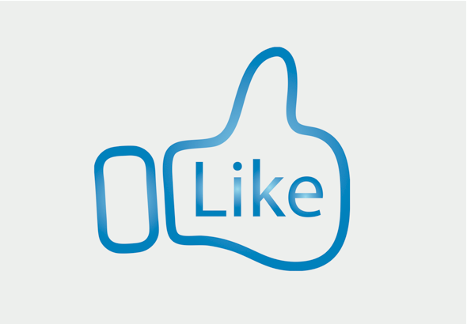

What is Earned Media?
Earned media is when your customer becomes the channel. It involves online reviews and recommendations, word of mouth, viral, or buzz related to your company's activities and content. It is the natural result of your public/media relation’s efforts, ad campaigns, events and the content that you create within your paid and owned media channels. When someone not associated with your brand mentions you on Twitter, Facebook or any other social media channel, it’s earned media. Other types of earned media include consumers’ social media posts, tweets, videos, photos, and conversations within online communities.
What are the Benefits?
The biggest impact of earned media is credibility. No doubt, you are more likely listen to the advice of your friends and family over a company advertisement. Recommendations, referrals, and reviews from friends and acquaintances of your customer are more credible than paid ads. Earned media also provides transparency and permanence. Online conversations last. Topics on the web shift quickly, but the actual dialogue is always there and available for discovery. In contrast, once an ad campaign is over, it's reach is gone unless it was good enough for people to keep talking about it.
What are the Challenges?
The fact that online conversations last is a double-edged sword. You have no control over what is said, and it has the potential to be negative. Horror stories abound of companies that blew it online and had to back-pedal feverishly to contain the damage. But, this lack of control and power to the customer is the new world we live in. Companies that don't embrace it won't survive, so it's imperative to learn how to navigate the landscape.
How Can You Leverage It?
Earned media is the single most powerful component of your content marketing strategy. It is the result of well-executed and well-coordinated paid and owned media initiatives, as well as delivering plain old good business. Some key considerations:
- Do you listen to and engage with your customers and online community?
- Have you asked them for testimonials, reviews, and recommendations and given suggestions on where and how to do that?
- Do you know who the influencers are in your community and how you will reach out to them?
- Have you asked your customers to share your content?
Engaging with your prospects, customers, and online community is the surefire way to generate positive word of mouth, and limit negativity. Don't make the mistake of ignoring what's happening online. People are talking about you. Whether you know it, or not.
(Sources: Forrester Research and Hootsuite)